Two independent choices, both on the 3 in soft maple posts you confirmed against the island: how the post's vertical edges are treated (E1 to E5) and what happens at the floor (F1 to F4). Every picture is rendered from the bench's own CAD constants, so the reveals, setbacks and gaps are the real ones. Tap any picture to enlarge it.
Decided 2026-09-27: E1 stays (3/8 in chamfer, posts straight to the floor), and the side and back panels come down to the bottom drawer front's line, 3/4 in off the floor instead of 1-1/2 in. This page is kept for the record.
3 x 3 in posts, floor to underside of top
1-3/4 in top, 1-1/4 in overhang (overhang still provisional)
Ply panels 1/2 in behind the post faces, fronts 1/4 in behind
Posts glued from two 8/4 pieces (seam on a side face, same in every option)
Post edges
pick one: E1 to E5. Left picture: the top 9 in of the front-left corner, seen from outside. Right: plan section of the post, to scale.
E1
3/8 in chamfer, all four edges
current CADpicked 2026-08-24
corner, from the front-left
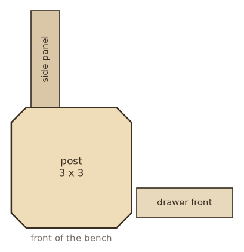
plan section
A crisp facet on every edge, full length. The facet catches light as a thin bright line up each corner, and the two reveal-side facets echo the 1/2 in panel setback.
Build: 45 degree chamfer bit, one pass per edge on the router table before the grooves are cut.
E2
Square, edges only eased
shown before as "crisp square"
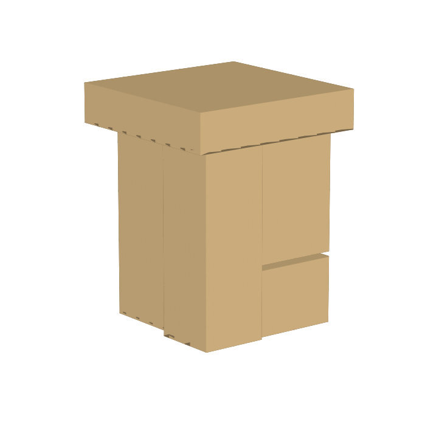
corner, from the front-left
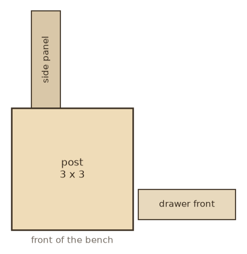
plan section
The blockiest reading of a 3 in post and the closest to a plain Boos leg. Edges broken about 1/16 in with a block plane so they do not chip; nothing else.
Build: nothing to machine. Hardest to keep looking sharp over the years (dents show).
E3
3/8 in roundover, all four edges
new
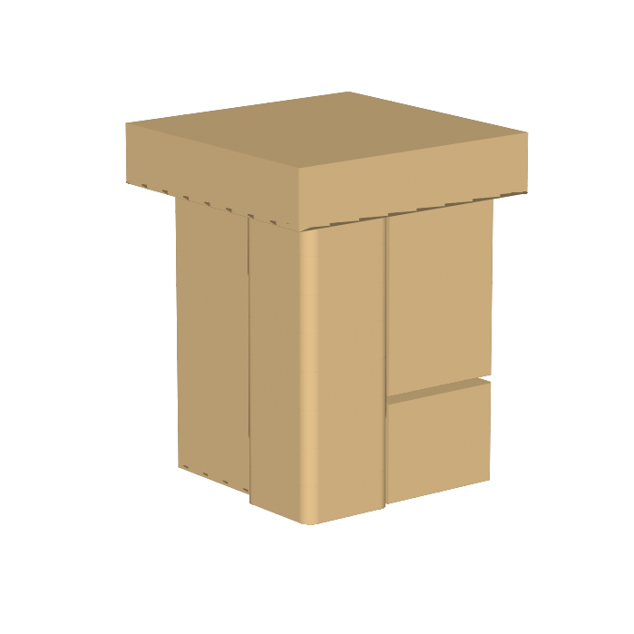
corner, from the front-left
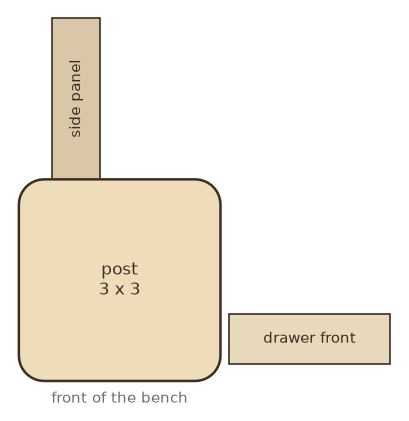
plan section
Same reach as the chamfer but soft: the highlight becomes a gradient instead of a line. Reads more Shaker, friendlier at knee height on a bench people sit on.
Build: 3/8 in roundover bit, same passes as E1. The fillet meets the 1/2 in panel setback cleanly (3/8 < 1/2).
E4
3/4 in chamfer on the outer corner, 3/8 in on the reveal edges
newheavier corner
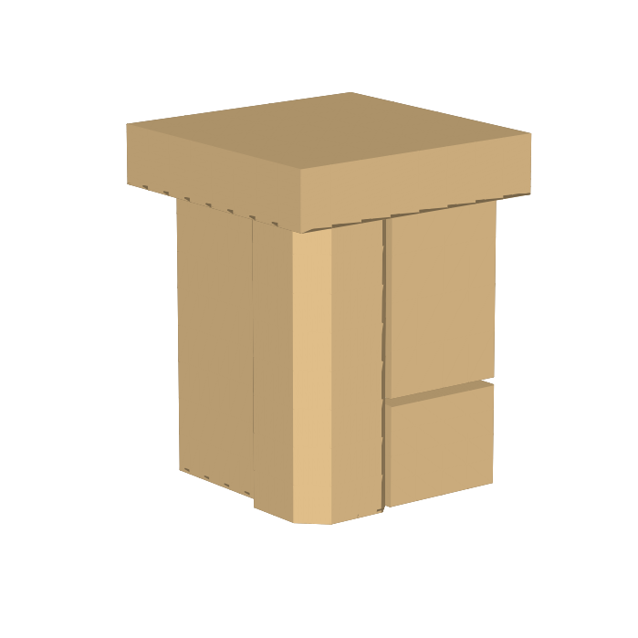
corner, from the front-left
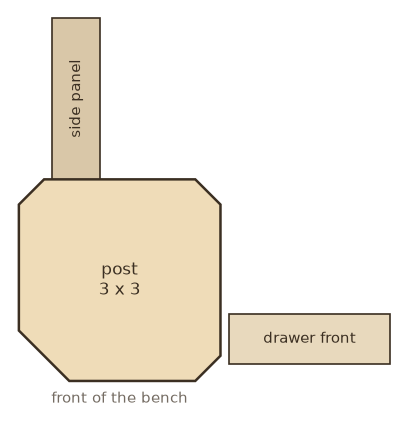
plan section
The outside corner gets a wide facet, about a quarter of the post face, so the post starts to read as a faceted column. The two edges beside the panels and drawer fronts stay at 3/8 in: anything bigger there breaks into the panel grooves, which sit 1/2 in behind the face.
Build: outer corner on the table saw at 45 degrees then a hand plane (or a large chamfer bit); 3/8 in bit for the other two edges.
E5
3/4 in roundover on the outer corner, reveal edges crisp
newone soft corner
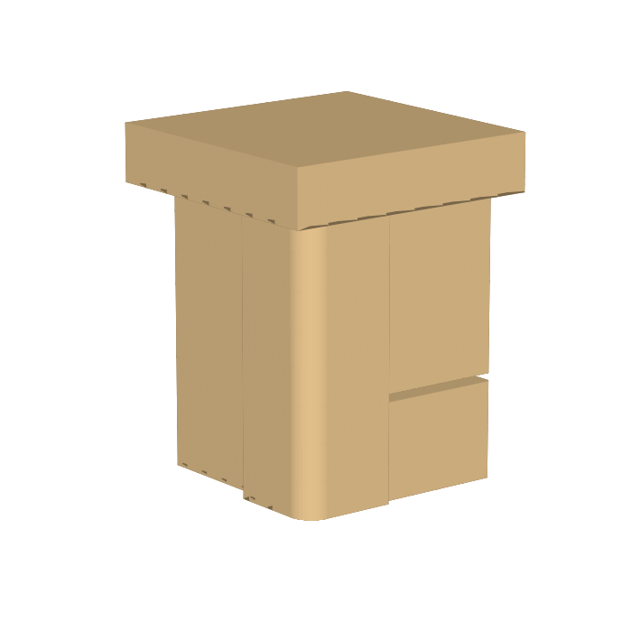
corner, from the front-left
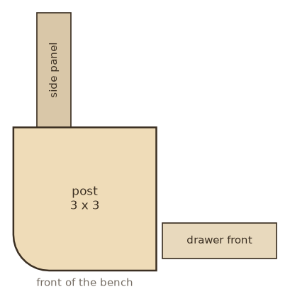
plan section
Only the corner you bump into is softened, with a big radius; the edges that meet the panels and fronts stay sharp so the 1/2 in and 1/4 in setbacks keep a crisp shadow line. A mixed detail, closer to a modern piece than to E3.
Build: 3/4 in roundover bit (a 1-1/2 in diameter cutter, router table, two or three passes) or plane and sand to a template.
At the floor
pick one: F1 to F4. Left picture: the whole bench. Right: the bottom 9 in of the front-left corner. All four are drawn with the E1 chamfer; the F choice works with any E.
F1
Straight to the floor
current CAD
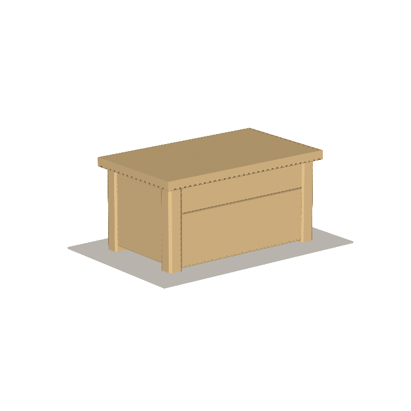
whole bench
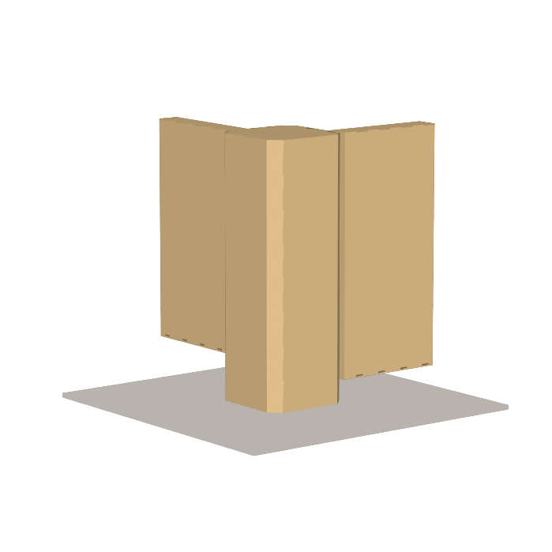
foot, bottom 9 in
The post runs unchanged to the floor. The side panels stop 1-1/2 in up (the groove stop) and the drawer fronts 3/4 in up, so the bench reads as a cabinet standing on four proud posts.
panel bottoms
1-1/2 in off the floor
fronts
3/4 in off the floor
drawer fronts
5-5/8 over 11-1/8 in
drawer boxes
3-9/16 over 8-7/16 in tall
F2
Stopped edge, square foot
newsame gaps as F1
whole bench
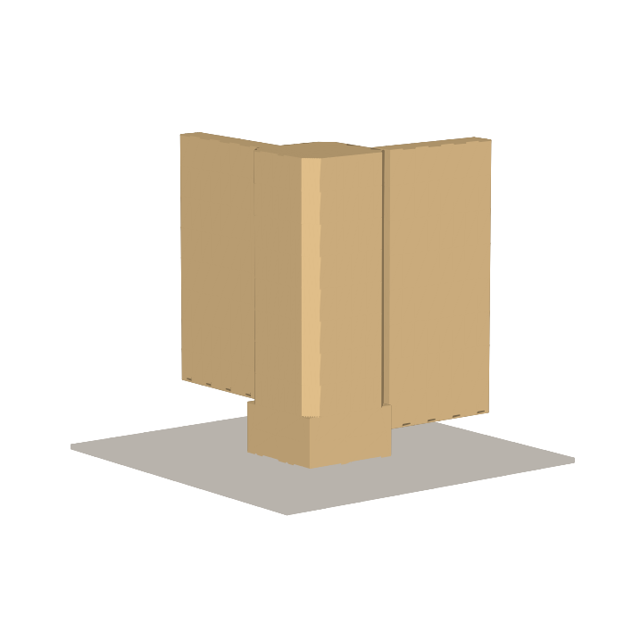
foot, bottom 9 in
The chamfer (or roundover) stops at the panel line, 1-1/2 in above the floor, and the last 1-1/2 in is left square. The square block reads as a foot and lines up with the bottom of the side panels, so the stop is a design line, not an accident.
Build: stop the router pass 1-1/2 in from the bottom; a square stop from a plunge on the router table, or a lamb's-tongue run-out by hand if you want it fancier. Only makes sense with E1, E3, E4 or E5.
panel bottoms
1-1/2 in off the floor
fronts
3/4 in off the floor
drawer fronts
5-5/8 over 11-1/8 in (unchanged)
F3
3 in of leg showing
newchanges the drawer split
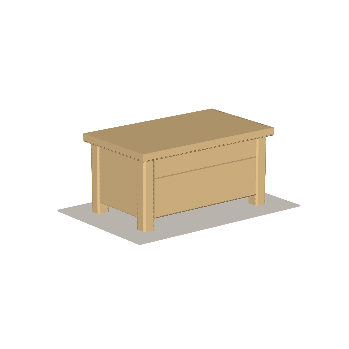
whole bench
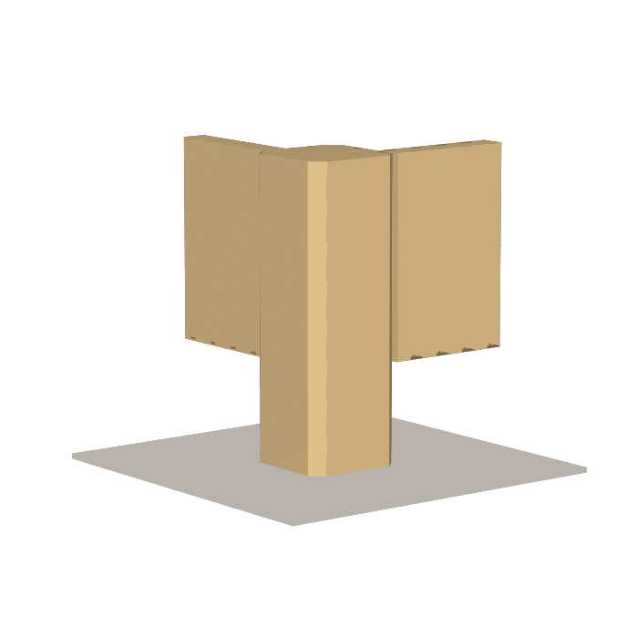
foot, bottom 9 in
Panels and drawer fronts both stop 3 in above the floor, so the posts read as legs the way the island's do, with a toe space under the bench. The cabinet box gets 2-1/4 in shorter, and the front zone is re-split by the same 1:2 rule.
panel bottoms
3 in off the floor
fronts
3 in off the floor
drawer fronts
4-7/8 over 9-5/8 in
drawer boxes
2-13/16 over 6-15/16 in tall
Top drawer box drops to 2-13/16 in tall (about 2-1/4 in inside). Fine for flatware and lids, tight for much else.
F4
4-1/2 in of leg showing
newchanges the drawer split
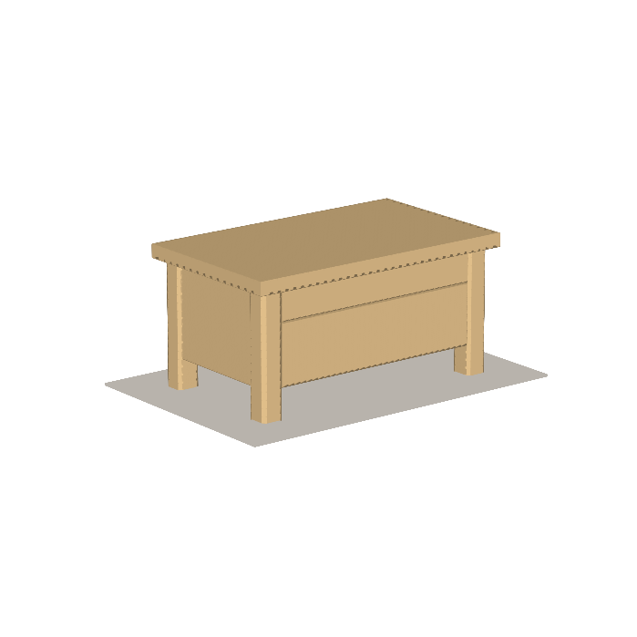
whole bench
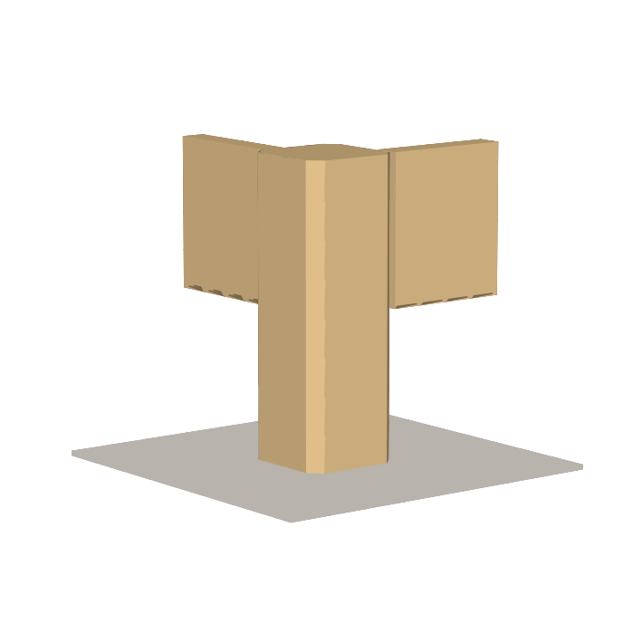
foot, bottom 9 in
Same idea with the box lifted 4-1/2 in: unmistakably a table on legs, and the floor is easy to clean under. The cost is drawer height; at this point a single deep drawer would make more sense than two.
panel bottoms
4-1/2 in off the floor
fronts
4-1/2 in off the floor
drawer fronts
4-3/8 over 8-5/8 in
drawer boxes
2-5/16 over 6 in tall
Top drawer box 2-5/16 in tall (under 2 in inside): too shallow to be useful. Choose F4 only if the top drawer goes away or both become one.
Not drawn again: the tapered foot (shown 2026-08-24, passed on), the flush wrapped corners and the plinth base (passed on 2026-08-23), and a turned foot (needs a lathe). Any of them can come back if you want to see it against these.
Answer with one letter from each group, for example E3 + F2. The CAD takes the change as two constants (edge size and kind, groove stop and floor gap), the asserts re-check the drawer clearances, and the cut list follows.